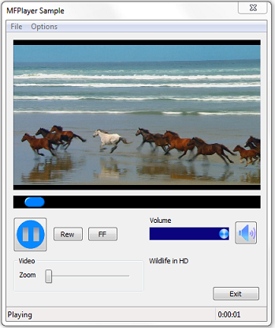

[!IMPORTANT] Deprecated. This API may be removed from future releases of Windows. Applications should use the Media Session for playback.
Â
Demonstrates some of the playback features that are omitted from the SimplePlay sample, such as:
The following image shows the controls used for these features.

This sample demonstrates the following APIs.
| Product | Version |
|---|---|
| Windows SDK | Windows 7 |
Â
This sample is available in the Windows classic samples github repository.
Using MFPlay for Audio/Video Playback
Â
Â